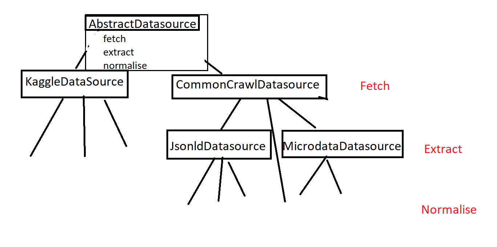
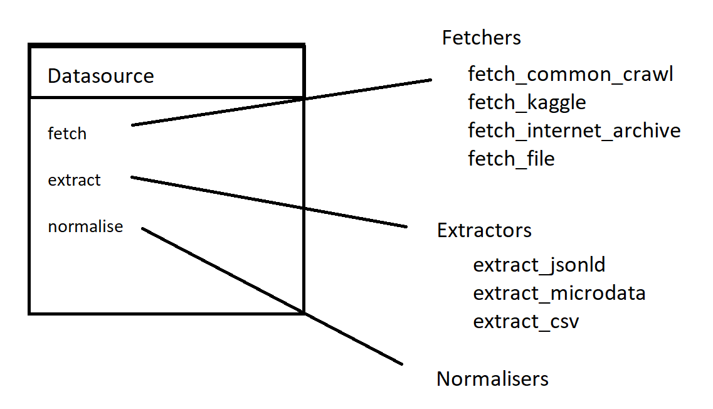

Composition Over Inheritence
I have been trying to extract job ads from Common Crawl, and have designed a pipeline with 3 phases; fetching the data, extracting the content and normalising the data. However the way I implemented this is using inheritance to remove some of the duplication between the steps. While this made it quick to start it’s hard to understand, and to extend it I need to introduce more duplication.
My current design started pragmatically; a data source needed to be able to fetch, extract and normalise. However I had two common data sources, CommonCrawl and Kaggle, and so it didn’t make sense to repeat the fetch logic everywhere and so I made these subclasses of the AbstractDatasource. Then a lot of the CommonCrawl datasources had data in JSONLD or Microdata format, and so I made these subclasses. And then each data source was a subclass of one of these.

Extensive use of inheritance is an architecture smell. Inheritence tightly binds things together and makes them hard to compose. This came up as I started to think about adding the Internet Archive or file storage datasources. Some of these would have data JSONLD or Microdata format, but that doesn’t fit in the hierarchy. Do I copy the logic around in different inheritance trees? Do I try to do something clever with multiple inheritance or mixins?
Looking at the layers each step is an independent piece of logic. The CommonCrawlDatasource and KaggleDatasource are primarily about how to fetch the data. The Microdata and JSONLD classes are primarily about how to extract the data. Each source currently has its own way to normalise the data, but as I expand some of those could be shared. A data source should be composed of these pieces.

In a language like Java this would be done by making Fetcher, Extractor and Normaliser classes, but in Python they can just be functions we pass at instantiation. This makes it easy to mix and match the components when they make sense. I’m sure this has a catchy design pattern name, but in effect a datasource is just a container of the 3 functions.
Inheritence is a very inflexible construct that tightly binds different code together. Wherever possible try to compose things out of components rather than use a hierarchy, because it allows a lot more flexibility and independence.